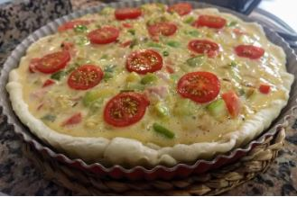

Quiche de verduras
Ingredientes
- Masa quebrada redonda congelada o refrigerada (en cualquier supermercado la encontraréis). También podéis utilizar hojaldre.
- 75 gramos de queso Gruyer rallado (lo podéis rallar vosotros mismos en casa). En su defecto podéis utilizar Emmental.
- 30 gramos de panceta cortada a tiritas de 25 mm
- 1 cebolla pequeña
- 1 puerro pequeño
- 1/4 de pimiento verde y rojo (yo le puse dos restos de pimientos de una elaboración anterior, podéis poner 1/4 de pimiento o rojo o verde o no poner)r
- 1 trozo de calabacín
- 3 huevos
- 100 ml de nata para cocinar
- mantequilla para engrasar el molde
- sal, pimienta y aceite de oliva
Preparación
- Precalentad el horno a 180º
- Engrasad un molde, de 24-26 cm de diámetro con los bordes ondulados, con la mantequilla y un poco de harina espolvoreada y encamisadlo con la lámina de pasta quebrada u hojaldre, cubriendo todo el molde. Pinchad la base con un tenedor en varias zonas para evitar que se hinche. Hornead en blanco durante 5 minutos y reservad..
- Cortad todas las verduras en trocitos pequeños (brunoise) y sofreíd la cebolla y el puerro en una sartén y a los 5 minutos añadís el pimiento. Cuando ya casi esté hecho añadid el calabacín y 2 minutos más tarde la panceta y le dais unas vueltas. Reservad.
- Batid los huevos con la sal y la pimienta. Añadid la nata, las verduras con el bacon y el queso. Batid la mezcla durante 10 segundos.
- Volcad la mezcla en el molde con la masa previamente horneada, añadid los tomates Cherry cortados por encima, y hornead durante 25-30 minutos a 180º. La masa deberá estar doradita y la mezcla por arriba cuajada y con color.
- Nota: Todas las quiches siguen el mismo patrón. Lo único que hay que variar son los ingredientes: calabacín, champiñones, tomates, quesos, bacon, jamón, salchichas, ajos tiernos, puerros, cebollar, cebolletas, espinacas, espárragos, …ahí ya dejáis volar vuestra imaginación. Sed creativos. Podéis cambiar, quitar o añadir los ingredientes que queráis.
